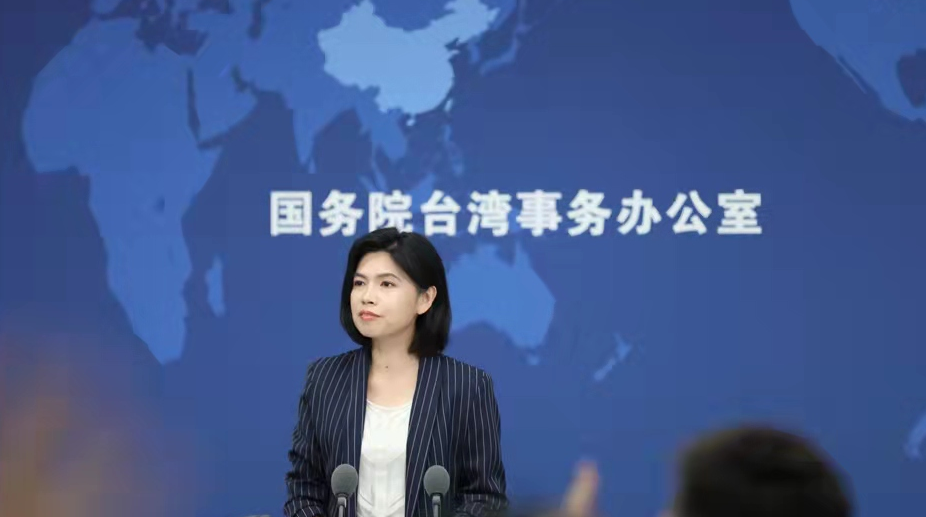
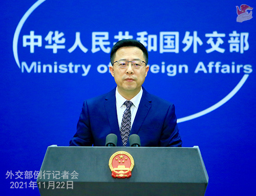
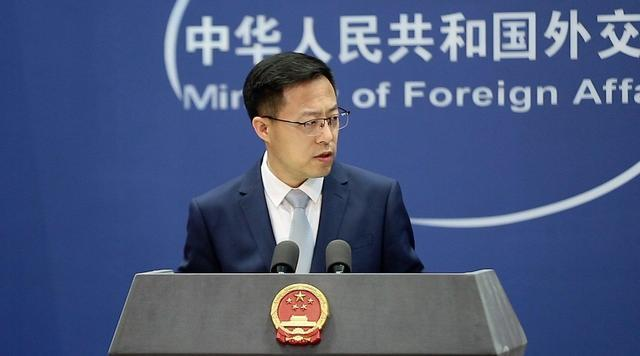
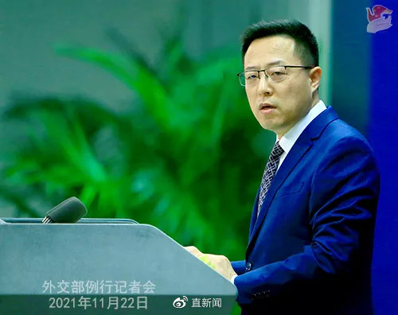

有记者问，新华社今日报道上海、江苏等省市执法部门对台湾远东集团 在当地投资企业存在违法违规行为进行了查处。近日国台办公布“台独” 顽固分子清单并表示依法对“台独”顽固分子及其关联企业和金主实施惩 戒。请问这两件事有无关联？
朱凤莲应询说，台湾远东集团在上海、江苏、江西、湖北、四川等地的 化纤纺织、水泥企业存在一系列违法违规行为，有关部门依据国家法律 法规对其采取罚款、追缴税款、限期整改等措施，并收回该企业闲置建 设用地。查处违法违规问题仍在继续。
朱凤莲表示“台独”顽固分子谋“独”言行恶劣，严重破坏两岸关系，严重 危害台海和平稳定，严重损害两岸同胞共同利益和中华民族根本利益。 对他们及其关联企业和金主必须依法惩戒。
朱凤莲说，需要指出的是，我们欢迎支持广大台胞台企来大陆投资发展， 将继续依法保障台胞台企的合法权益，但绝不允许支持“台独”、破坏 两岸关系的人在大陆赚钱，干“吃饭砸锅”的事。广大台商台企要明辨 是非，站稳立场，与“台独”分裂势力划清界限，以实际行动维护两岸 关系和平发展。

赵立坚在回应时不点名地批评了“某些大国”。赵立坚指出，立陶宛走到今天 这一步，明显是被某些大国所策动，但牺牲的是立陶宛的利益。“我们呼吁 世界上其他国家从自身根本利益出发，从国际公理和正义出发，不要被某些 大国所裹挟，不要无谓卷入对抗。”

“立陶宛在台湾是没有什么特别的利益的。但由于某些国家的操弄，加上台湾地区争取所谓‘国际空间’，各 方一拍即合，造成了立陶宛方面对一个中国原则的挑战。” 南开大学台港澳法研究中心执行主任李晓兵表 示，中国政府此次对立陶宛做出的“立场宣示”，是正当且必要的。
赵立坚表示，根据《维也纳外交关系公约》，外交关系分为大使级、公使级、代办级。中方的有关决定已 经充分体现了中方的严正立场。“接下来大家最应该关心的是，立陶宛究竟是要一条道走到黑，还是纠正错 误、亡羊补牢。”

| 来源 北京日报客户端 2135~任世锋 | |
| 编辑：任世锋 | |
| 流程编辑：任世锋 |